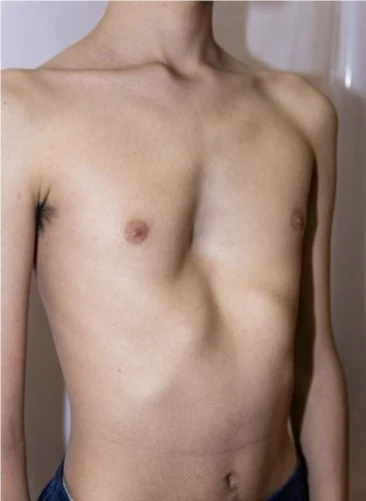
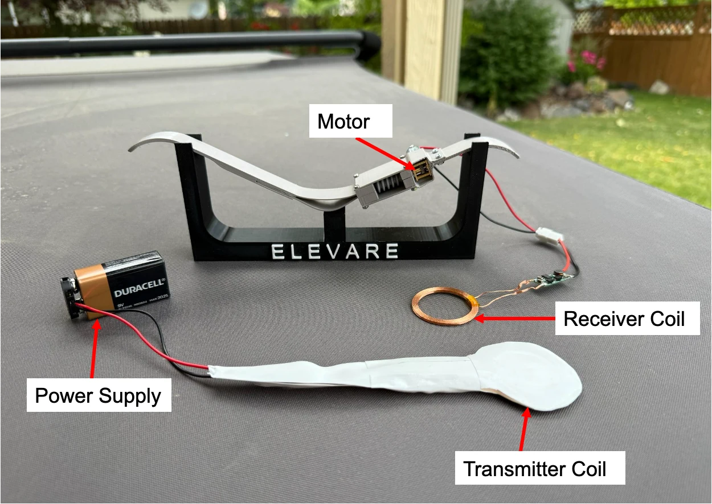
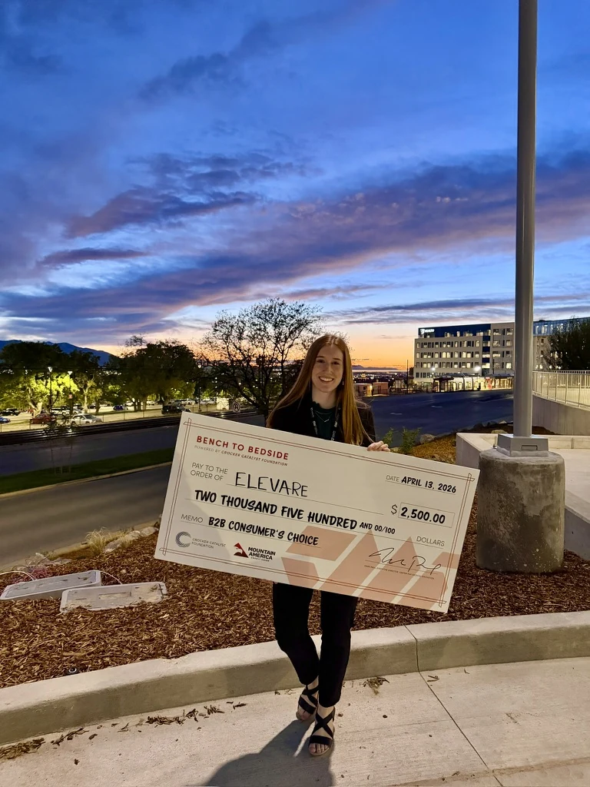
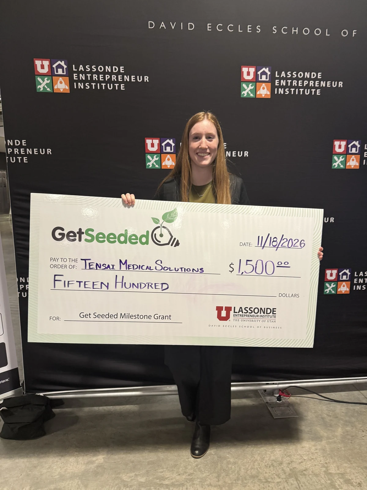

Tensai Surgical Solutions · University of Utah master’s project
Elevare: gradual-correction implant
I developed Elevare, a functional prototype for gradual correction of pectus excavatum, as my University of Utah master’s project. I am continuing its development as a design engineer at Tensai Surgical Solutions.

The problem
Pectus excavatum is an inward depression of the chest wall. Surgical repair lifts the sternum with an implanted bar, but recovery can be painful, particularly for adults with less flexible chest walls. Patient and clinician conversations highlighted a need for a more gradual, predictable correction process.
Clinical background: Mayo Clinic.


Our approach
Elevare combines the support of an implantable bar with a motor-driven adjustment mechanism. Small, clinician-controlled adjustments are intended to lift the sternum over time, with the goal of reducing postoperative pain. Wireless power transfer is being explored to drive the mechanism without an implanted battery.


My contribution
- Observed three Nuss procedures and pre- and postoperative consultations to understand the clinical workflow.
- Developed a functional mechanical prototype for incremental sternum elevation.
- Integrated the motor and wireless-power setup to actuate the prototype.
Recognition
- Consumer’s Choice Award, Bench-to-Bedside — $2,500, April 2026.
- Lassonde Get Seeded milestone grant — $1,500, November 2026.




Skills: Implant prototyping, Mechanical design, Product development